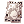

Buwaya Cave
| This quest or instance is repeatable. | ||
|---|---|---|
| Cooldown | Tickets Available | |
|
Resets at 0:00 |
Solo: 0 | Party: 0 |
Overview
| Requirements | |
|---|---|
| Base Level: | 130 |
| Starting Point: | |
| Prerequisite(s): | - |
| Rewards | |
| Experience: | - |
| Items: | - |
Access
Buwaya Cave is one of the Port Malaya instances. The walkthrough is pretty straightforward.
To get to the instance, start talking to the Guard NPC at and select I'm here to hunt down Buwaya option.
Then walk to the warp just up from the Guard and select Enter.
Walkthrough
Upon entering the cave and walking further in, you'll notice several Seaweed monsters casting  Decrease Agi on you and
Decrease Agi on you and  Heal on each other. They are only annoying and don't deal much damage.
Heal on each other. They are only annoying and don't deal much damage.
There are also some Buwaya's Slaves, which deal a bit of damage, but are as well not a big threat. The largest threat comes from either Buwaya or Fake Buwaya MVPs. They both cast Storm Gust and deal pretty decent damage.
Upon facing any of the Fake Buwayas, you'll hear it yelling "I will put you in my treasure box!" and shortly after that you will be warped inside the Buwaya's Treasure Box (a little wooden room).
Buwaya's Treasure Box
The room is filled with poison gas, so be ready to drink up few potions to survive. Even if you use  Detoxify or
Detoxify or  Green Herb, you will be poisoned again.
Green Herb, you will be poisoned again.
There are two NPCs inside the Treasure Box - talk to both of them. One gives you ATK and MATK buffs, and the other one reveals Buwaya's Weakpoints (two little dots on the wall).
Kill them in order to spawn a warp to get outside of the Treasure Box.
Finishing the instance
After getting out from the Buwaya's Treasure Box, you have some time to identify the real Buwaya and kill it before you get teleported to the Treasure Box again and repeat the process.
Once the real Buwaya is defeated, an exit warp will show up right at the entrance to the cave, where you were teleported upon entering the instance.
Enemies
| Image | Name | Level | HP | Size / Race / Element |
|---|---|---|---|---|
| Seaweed | 100 | 10 | Small / Fish / Water 1 | |
| Buwaya's Slave | 135 | 20,145 | Small / Plant / Earth 1 | |
| Buwaya's Egg | 100 | 10,000 | Small / Formless / Neutral 3 | |
| Buwaya's Weakpoint | 138 | 20 | Small / Plant / Water 4 | |

|
Fake Buwaya | 138 | 30,000 | Small / Plant / Water 4 |
Buwaya
|
151 | 4,090,365 | Large / Dragon / Water 4 |
Cards
| Card | Type | Effects |
|---|---|---|
| Armor Card |
|
Buwaya specific equipment
Buwaya also drops four items worth mentioning:
These items can be further transformed into their corresponding slotted versions and an accessory.
This is done via various NPCs in Baryo Mahiwaga tribe village (a ma_fild01 map).
- Kalasag (Bayani) [1] can be crafted at Tribe Blacksmith NPC at . Just bring +9 Kalasag and 20x Ancient Grudge.
- Buwaya Sack Cloth (Bayani) [1] can be crafted at the same NPC. Bring
 +9 Buwaya Sack Cloth and 20x Ancient Grudge.
+9 Buwaya Sack Cloth and 20x Ancient Grudge. -  Buwaya Agimat Tattoo can be crafted at Tattooist NPC at . Bring 1x Buwaya Doll, 1x
 Piece of Buwaya's Spirit and10x Ancient Grudge.
Piece of Buwaya's Spirit and10x Ancient Grudge.